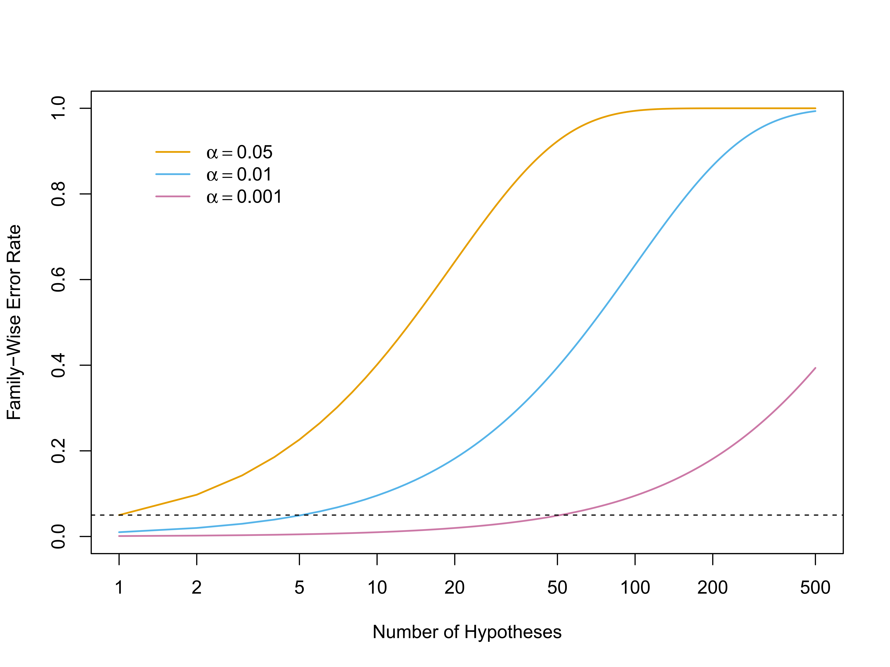
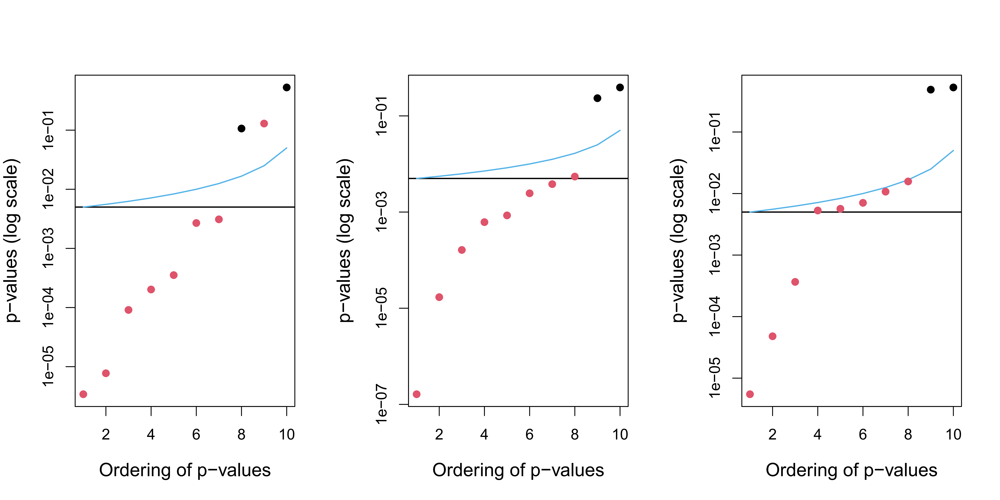
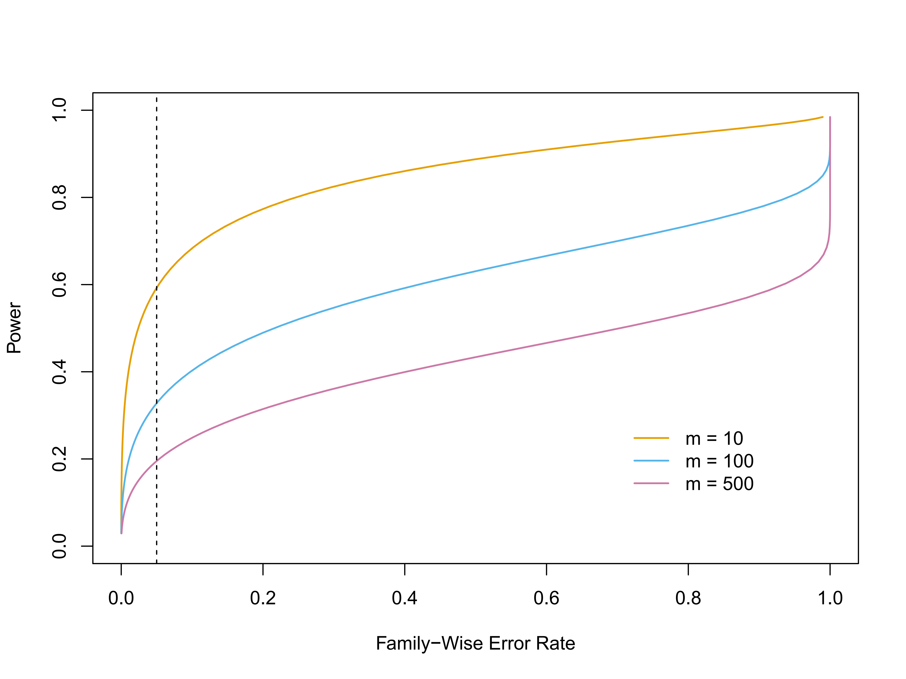
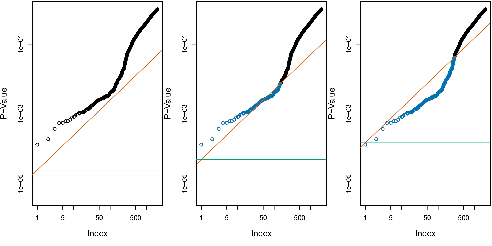
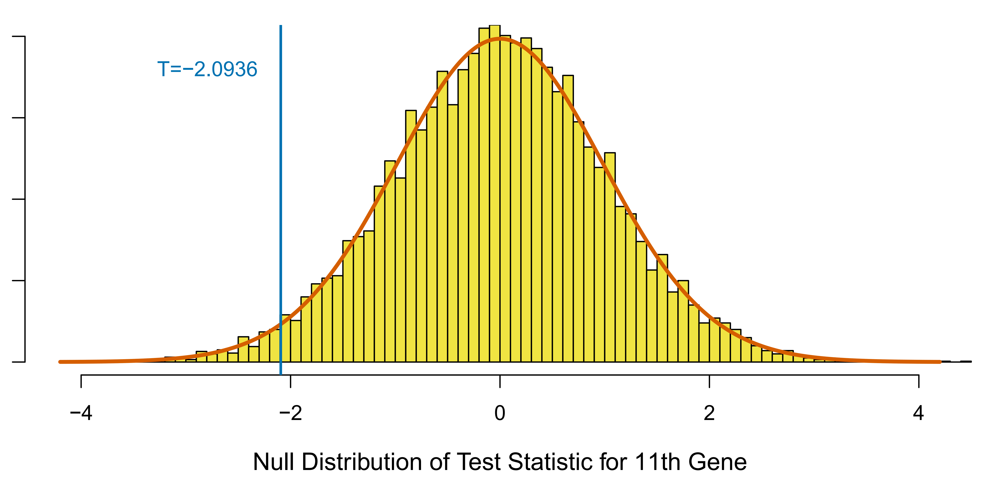
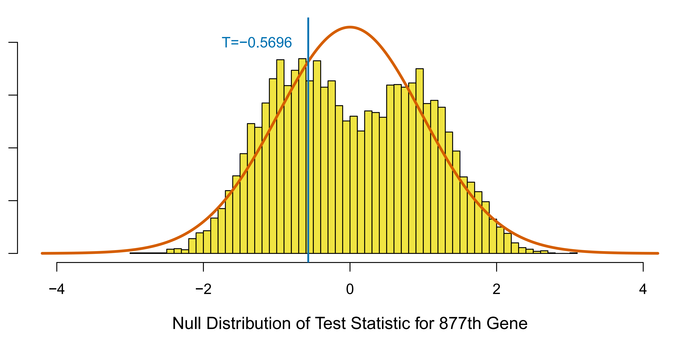

Introduction Multiple Testing
This chapter shifts focus from estimation and prediction to hypothesis testing, a key aspect of statistical inference.
We’ll explore the challenges of multiple testing: testing many null hypotheses simultaneously.
Goal: Understand how to interpret results and avoid erroneously rejecting too many null hypotheses in a “big data” setting.
Review of Hypothesis Testing
- Hypothesis testing provides a framework to answer “yes-or-no” questions using data.
- Examples of questions:
- Is a coefficient in linear regression equal to zero?
- Is there a difference in the expected blood pressure between a control and treatment group?
Steps in Hypothesis Testing
Define Hypotheses:
- Null Hypothesis (H₀): The default assumption (e.g., no difference, no effect).
- Alternative Hypothesis (Hₐ): Contradicts the null (e.g., there is a difference).
Construct Test Statistic: A value summarizing evidence against H₀.
Compute p-value: Probability of observing a test statistic as extreme or more extreme than the observed one, assuming H₀ is true.
Decide: Based on the p-value, decide whether to reject H₀.
Defining the Hypotheses
Null Hypothesis (H₀): The baseline assumption, often representing “no effect” or “no difference.” We aim to find evidence against the null hypothesis.
Alternative Hypothesis (Hₐ): Represents what we might suspect is true if H₀ is false. Often simply the negation of H₀ (e.g., if H₀ is “A=B”, then Hₐ is “A≠B”).
Constructing the Test Statistic
- The test statistic measures how much the data deviates from what’s expected under H₀.
- Its form depends on the specific hypothesis being tested.
- Example:
- Testing equality of means (μₜ = μc) between a treatment and control group: Use a two-sample t-statistic.
Two-Sample t-statistic
\[ T = \frac{\hat{\mu}_t - \hat{\mu}_c}{s \sqrt{\frac{1}{n_t} + \frac{1}{n_c}}} \]
where
- $ _t, _c$: Sample means of treatment and control groups
- $ n_t, n_c $: Sample sizes of treatment and control groups
- $ s $: Pooled standard deviation
\[ s = \sqrt{\frac{(n_t - 1)s_t^2 + (n_c - 1)s_c^2}{n_t + n_c - 2}} \] - \(s_t^2\) and \(s_c^2\) are unbiased estimators of the variance of the treatment and control groups, respectively. - A large (absolute) value of T provides evidence against Ho.
Computing the p-value
- p-value: Probability of observing a test statistic as extreme as, or more extreme than, the one calculated from the data, assuming the null hypothesis is true.
- A small p-value indicates strong evidence against H₀.
The p-value is not the probability that H₀ is true. It’s the probability of the data (or more extreme data), given that H₀ is true.
Example: p-value Interpretation
 The density function for the N(0, 1) distribution, with the ver- tical line indicating a value of 2.33. 1% of the area under the curve falls to the right of the vertical line, so there is only a 2% chance of observing a N(0, 1) value that is greater than 2.33 or less than −2.33. Therefore, if a test statistic has a N(0, 1) null distribution, then an observed test statistic of T = 2.33 leads to a p-value of 0.02.
The density function for the N(0, 1) distribution, with the ver- tical line indicating a value of 2.33. 1% of the area under the curve falls to the right of the vertical line, so there is only a 2% chance of observing a N(0, 1) value that is greater than 2.33 or less than −2.33. Therefore, if a test statistic has a N(0, 1) null distribution, then an observed test statistic of T = 2.33 leads to a p-value of 0.02.
Null Distribution
- The distribution of the test statistic under H₀ is called the null distribution.
- Common null distributions:
- Normal distribution
- t-distribution
- χ²-distribution
- F-distribution
- Knowing the null distribution allows us to calculate p-values.
Decision Making
- We reject H₀ if the p-value is below a pre-defined significance level (α).
- Significance level (α): The threshold for rejecting H₀ (commonly 0.05).
- If p-value < α, we reject H₀; otherwise, we fail to reject H₀.
We never “accept” H₀. We only “reject” or “fail to reject” it.
Type I and Type II Errors
| H₀ True | H₀ False | |
|---|---|---|
| Reject H₀ | Type I Error | Correct |
| Fail to Reject H₀ | Correct | Type II Error |
- Type I error: Rejecting H₀ when it’s actually true (false positive). Probability = α.
- Type II error: Failing to reject H₀ when it’s false (false negative).
- Power: Probability of correctly rejecting H₀ when it’s false (1 - Probability of Type II error).
The Challenge of Multiple Testing
- When testing a single hypothesis, controlling the Type I error rate (α) is straightforward.
- Problem: When testing many hypotheses, the chance of making at least one Type I error increases dramatically, even if each individual test has a low α.
- Analogy: Flipping many coins – even fair coins will show “all tails” eventually.
Illustration: The Stockbroker
- A stockbroker claims to predict Apple’s stock price for 10 days.
- She emails 1024 potential clients, each with a different prediction sequence (2¹⁰ = 1024 possibilities).
- One client receives a perfect prediction! But it’s just due to chance, not skill.
- This illustrates how making many “guesses” (tests) can lead to seemingly significant results purely by chance.
Family-Wise Error Rate (FWER)
FWER: The probability of making at least one Type I error among m hypothesis tests.
If all m tests are independent and all null hypotheses are true, then:
\[ \text{FWER}(\alpha) = 1 - (1 - \alpha)^m \]
- This shows that FWER increases rapidly with m.
FWER Example

The family-wise error rate, as a function of the number of hypotheses tested (displayed on the log scale), for three values of α: α = 0.05 (orange), α = 0.01 (blue), and α = 0.001 (purple). The dashed line indicates 0.05. For example, in order to control the FWER at 0.05 when testing m = 50 null hypotheses, we must control the Type I error for each null hypothesis at level α = 0.001.
Controlling the FWER
- To control the FWER at level α, we need stricter criteria for rejecting each individual hypothesis.
- Common methods:
- Bonferroni Correction: Reject H₀j if its p-value is less than α/m. Simple, but often too conservative (low power).
- Holm’s Method: A step-down procedure that’s less conservative than Bonferroni.
Bonferroni Correction
FWER(α/m) ≤ m × α/m = α. - Advantages: - Simple - Guaranteed to control the FWER. - Disadvantage: - Very Conservative, may miss the true effect.
Holm’s Method
Specify α, the level at which to control the FWER.
Compute p-values, p1, …, pm, for the m null hypotheses H01,…,H0m.
Order the m p-values so that p(1) ≤ p(2) ≤ … ≤ p(m).
Define \[ L = \min\big\{j:p_{(j)} > \frac{\alpha}{m+1-j} \big\} \]
Reject all null hypotheses H0j for which pj < p(L).
- It controls the FWER, but it is less conservative than Bonferroni.
- It will reject more null hypotheses, typically resulting in fewer Type II errors and hence greater power.
- Holm will always reject more tests than Bonferroni
Holm’s method illustration
 Each panel displays, for a separate simulation, the sorted p-values for tests of m = 10 null hypotheses. The p-values corresponding to the m0 = 2 true null hypotheses are displayed in black, and the rest are in red. When controlling the FWER at level 0.05, the Bonferroni procedure rejects all null hypotheses that fall below the black line, and the Holm procedure rejects all null hypotheses that fall below the blue line. The region between the blue and black lines indicates null hypotheses that are rejected using the Holm procedure but not using the Bonferroni procedure. In the center panel, the Holm procedure rejects one more null hypothesis than the Bonferroni procedure. In the right-hand panel, it rejects five more null hypotheses.
Other FWER Control Methods
Tukey’s Method: For comparing all pairs of group means.
Scheffé’s Method: For testing any linear combination of group means after looking at the data.
These methods are more powerful than Bonferroni/Holm in specific situations, but less general.
Trade-Off: FWER and Power
 In a simulation setting in which 90% of the m null hypotheses are true, we display the power (the fraction of false null hypotheses that we successfully reject) as a function of the family-wise error rate. The curves correspond to m = 10 (orange), m = 100 (blue), and m = 500 (purple). As the value of m increases, the power decreases. The vertical dashed line indicates a FWER of 0.05. - Controlling FWER strictly (low α) reduces power (increases Type II errors). - When m is large, controlling FWER can make it very difficult to reject any null hypotheses, even false ones.
False Discovery Rate (FDR)
- FDR: The expected proportion of false positives among all rejected null hypotheses.
\[ \text{FDR} = E\left(\frac{\text{Number of Type I Errors}}{\text{Number of Rejected Hypotheses}}\right) = E\left(\frac{V}{R}\right) \]
Controlling FDR is less stringent than controlling FWER. It allows for some false positives, but aims to keep their proportion low.
Motivation: In exploratory analyses with large m, we might be willing to tolerate some false positives to discover more true effects.
Benjamini-Hochberg (BH) Procedure
A simple procedure to control the FDR at a desired level, q:
- Specify q, the level at which to control the FDR.
- Compute p-values, p1, …, pm, for the m null hypotheses H01,…,H0m.
- Order the m p-values so that p(1) ≤ p(2) ≤ … ≤ p(m).
- Define \[L = \max\{j : p_{(j)} \leq qj/m\}.\]
- Reject all null hypotheses H0j for which pj ≤ p(L).
- Guarantees FDR ≤ q under independence (or mild dependence) of p-values.
BH Procedure: Key Idea
- The threshold for rejecting a hypothesis depends on all the p-values (through L), not just its own.
- This makes it less conservative than Bonferroni/Holm for FWER control.
Example: BH and Bonferroni

Each panel displays the same set of m = 2,000 ordered p-values for the Fund data. The green lines indicate the p-value thresholds corresponding to FWER control, via the Bonferroni procedure, at levels α = 0.05 (left), α = 0.1 (center), and α = 0.3 (right). The orange lines indicate the p-value thresholds corresponding to FDR control, via Benjamini-Hochberg, at levels q = 0.05 (left), q = 0.1 (center), and q = 0.3 (right). When the FDR is controlled at level q = 0.1, 146 null hypotheses are rejected (center); the corresponding p-values are shown in blue. When the FDR is controlled at level q = 0.3, 279 null hypotheses are rejected (right); the corresponding p-values are shown in blue.
Re-Sampling Approaches
- So far, we assumed we know the theoretical null distribution of the test statistic (e.g., t-distribution).
- Problem: Sometimes, the theoretical null distribution is unknown or assumptions are violated.
- Solution: Use re-sampling (e.g., permutation tests) to approximate the null distribution.
Permutation Test: Example
- Testing equality of means between two groups (X and Y).
- If H₀ is true (and distributions of X and Y are the same), then randomly swapping observations between groups shouldn’t change the distribution of the test statistic.
- We can permute the data many times, calculate the test statistic each time, and build an empirical null distribution.
Permutation Test: Steps
- Calculate the test statistic (e.g., t-statistic) on the original data.
- Repeatedly (many times):
- Randomly permute the observations between groups.
- Calculate the test statistic on the permuted data.
- The p-value is the proportion of permuted test statistics that are as extreme or more extreme than the original test statistic.
Resampling for FDR Control
- We can also use re-sampling to estimate the FDR directly, without calculating p-values first.
- The key idea is to approximate:
- E(V) (expected number of false positives) by permuting the data and counting rejections under the null.
- R (total number of rejections) from the original data. \[FDR = E(\frac{V}{R}) \approx \frac{E(V)}{R} \]
- Using re-sampling to estimate the null distribution can pool information from multiple hypothesis.
When is Re-Sampling Useful?
- When the theoretical null distribution is unknown or unreliable.
- When assumptions for the theoretical distribution are violated (e.g., non-normality, small sample size).
- Provides a flexible way to perform hypothesis testing in complex situations.
Re-Sampling Example
 The 11th gene in the Khan dataset has a test statistic of T = −2.09. Its theoretical and re-sampling null distributions are almost identical. The theoretical p-value equals 0.041 and the re-sampling p-value equals 0.042.
 The 877th gene in the Khan dataset has a test statistic of T = −0.57. Its theoretical and re-sampling null distributions are quite different. The theoretical p-value equals 0.571, and the re-sampling p-value equals 0.673.
Summary
- Multiple testing poses challenges: increased risk of false positives.
- FWER control is strict (Bonferroni, Holm), but can have low power.
- FDR control is less stringent, allowing for more discoveries.
- Re-sampling methods provide a flexible way to perform inference when theoretical null distributions are unavailable or unreliable.
Thoughts for Discussion 🤔
- How do you choose between controlling FWER and FDR in practice?
- What are the trade-offs involved?
- Can you think of real-world scenarios where multiple testing is crucial?
- When would you prefer using resampling approach?